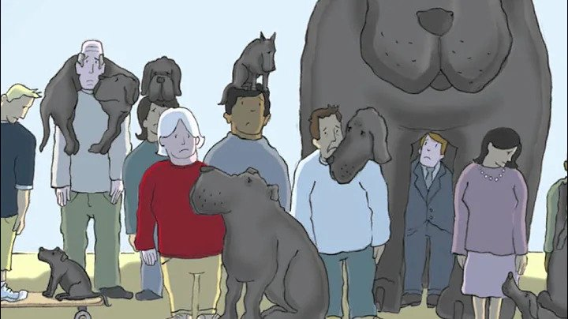

Persistent Depressive Disorder
Videos

I had a black dog, his name was depression
Podcasts


Recent News
Understanding Stress and its Effects on Mental Health
News article discussing the impact of stress on mental health and strategies to manage stress effectively.
Stress Management Techniques for a Healthy Mind and Body
A comprehensive guide on various stress management techniques and their benefits for overall well-being.
Blogs
Finding Inner Peace: Mindfulness Practices for Stress Reduction
A blog post exploring mindfulness practices that can help reduce stress and promote inner peace.
Coping with Work-Related Stress: Strategies and Tips
Insights and coping strategies to manage work-related stress effectively and maintain a healthy work-life balance.